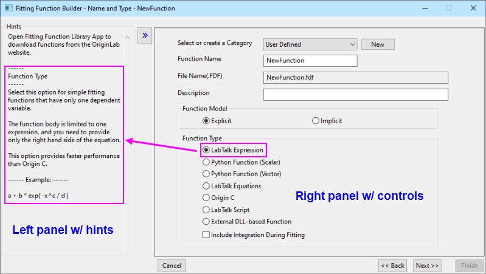

Dialog Fitfunktionen erstellen
FitFunc-Builder
Der Anpassungsfunktionsbuilder bietet einen bedienerfreundlichen Assistenten, der Sie durch die verschiedenen Schritte des Erstellens und Bearbeitens einer Anpassungsfunktion leitet.
Jede Seite des Assistenten enthält zwei Bedienfelder. Das linke Bedienfeld zeigt Hinweise und Beispiele. Das rechte Bedienfeld bietet Optionen, mit denen Sie Ihre benutzerdefinierte Funktion benutzerdefiniert anpassen können. Klicken Sie auf die Schaltfläche oder , um das linke Bedienfeld zu verbergen oder zu zeigen.
Es gibt mehrere Methoden, den Dialog Fitfunktion erstellen zu öffnen:
- Drücken Sie F8.
- Klicken Sie in Origins Hauptmenü auf Hilfsmittel und dann auf Fitfunktion erstellen.
- Klicken Sie auf die Schaltfläche Builder im Dialog Fitfunktionen verwalten.
Beachten Sie, dass das Erstellen und Bearbeiten von Funktionen mit dem Dialog Fitfunktionen verwalten gut möglich ist, mit dem Assistenten des Builders aber viel einfacher. Im Dialog Fitfunktion erstellen können Sie auf allen Seiten des Assistenten Optionen festlegen oder Seiten überspringen und Standardwerte beibehalten.
- 
HINWEIS:
- Wenn Sie eine Peakfunktion definieren möchten, um sie im Dialog Peaks analysieren zu verwenden, müssen Sie die Peakfunktion in der Kategorie PFW ablegen.
- Falls Sie eine Funktion zur Anpassung Ihrer Basislinie (OriginPro) mit dem Hilfsmittel Peaks analysieren definieren möchten, müssen Sie die benutzerdefinierte Funktion in der Kategorie Basislinie ablegen.
- Wenn Sie eine Peakfunktion definieren wollen, die im Minitool Peakanalyse oder im Hilfsmittel Mehrere Peaks anpassen verfügbar sein soll, muss die benutzerdefinierte Peakfunktion in die Kategorie Peak Functions im Dialog Fitfunktionen verwalten verschoben werden.
- Falls Sie eine implizite Fitfunktion definieren möchten, die in einer impliziten Kurvenanpassung verwendet wird, müssen Sie die benutzerdefinierte Funktion in der Kategorie Implicit ablegen.
- Falls Sie eine Funktion zur Oberflächenanpassung definieren möchten, die in einer 2D-Oberflächenanpassung verwendet wird, müssen Sie die benutzerdefinierte Funktion in der Kategorie Surface Fitting ablegen.
- Falls Ihre Funktion nicht in den obenstehenden Kategorien definiert ist, können Sie Hilfsmittel: Fitfunktionen verwalten wählen. Verschieben oder teilen Sie Ihre Funktionen in bzw. mit den obigen Kategorien.
|
|
Themen, die in diesem Abschnitt behandelt werden:
|